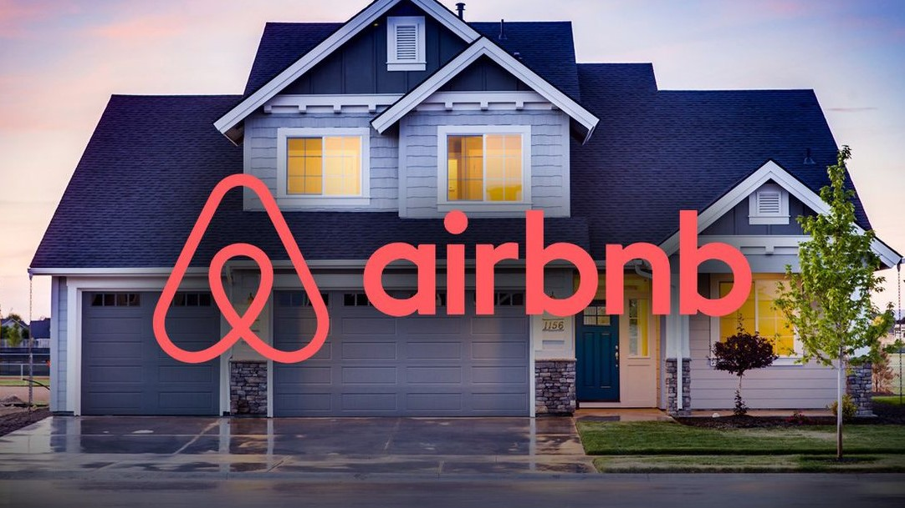

In this personal project, I analyzed over 10,000 Airbnb listings to understand
pricing trends, occupancy rates, and market demand. I developed a Tableau dashboard
that visualizes average yearly availability, listings per host, count of listings,
and price per night by district. By utilizing advanced filtering and aggregation
techniques, I provided deeper market insights.

This project involves analyzing Telco customer churn by examining key factors such as tenure, contract types, payment methods, and monthly charges. The visualizations reveal trends in customer behavior, including how different contract types and payment methods relate to churn, as well as how tenure and monthly charges impact retention. This analysis provides insights into the main drivers of customer churn, offering a foundation for strategies to enhance retention.

This project involved analyzing crime data by reading and cleaning the dataset, handling different encodings, and removing duplicates. Key insights were gained by exploring crime frequencies, identifying common offense types, and visualizing trends over time and by day. Finally, the project used statistical analysis and visualizations to highlight significant patterns and variations in the data.

This project involved cleaning a Nashville housing dataset. We converted date formats, filled in missing property addresses, split full addresses into separate columns (address, city, state), standardized "Y" and "N" values to "Yes" and "No" in the "Sold as Vacant" field, removed duplicate records, and deleted unnecessary columns to ensure a clean and reliable dataset for analysis.
In this project, we cleaned and analyzed a London bike-sharing dataset. We performed data exploration, transformed and cleaned the data, and mapped numerical codes to descriptive names. The processed data was saved to an Excel file for further visualization in Tableau.
In this project, we built a comprehensive data pipeline to analyze data from the Tokyo Olympics using Azure's cloud services. Our workflow began by ingesting raw data into Azure Data Lake via Azure Data Factory. We then used PySpark in Azure Databricks to process and transform this data, ensuring it was ready for analysis. Finally, we utilized Azure Synapse Analytics to perform in-depth analysis, extracting key insights such as medal tallies by country and gender participation across various disciplines. This project demonstrates handling large-scale data processing and analysis in a cloud environment.